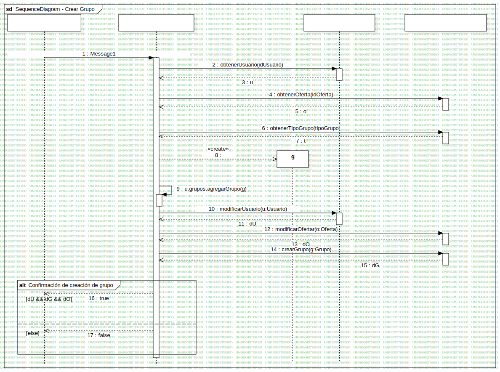

Interaction1
UMLInteraction
DevCodeWeb
::
David Edmundo
::
Diagrama de Componentes
::
Crear grupo
::
Interaction1
Description
none
Diagrams

SequenceDiagram - Crear Grupo
Fragments
Confirmación de creación de grupo
Participants
(Lifeline)
(Lifeline)
(Lifeline)
(Lifeline)
g
Messages
Message1 (→)
obtenerUsuario (→)
u (→)
obtenerOferta (→)
o (→)
obtenerTipoGrupo (→)
t (→)
(→g)
u.grupos.agregarGrupo (→)
modificarUsuario (→)
dU (→)
modificarOfertar (→)
dO (→)
crearGrupo (→)
dG (→)
true (→)
false (→)
Properties
Name
Value
name
Interaction1
stereotype
null
visibility
public
isReentrant
true
Owned Elements
SequenceDiagram - Crear Grupo